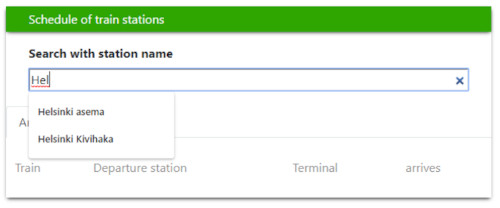
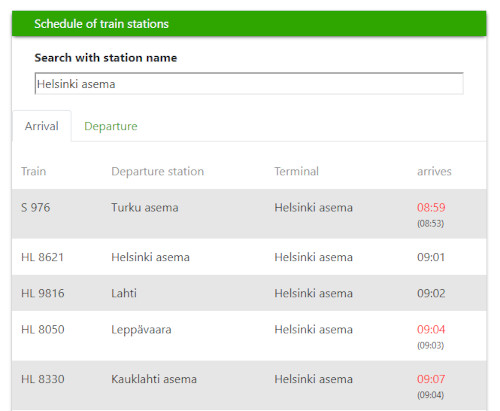
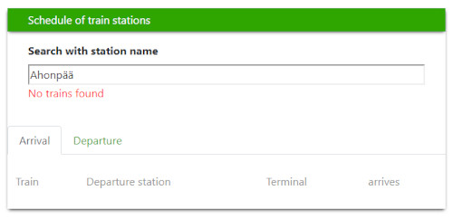

React.js
2020
Olli Korhonen
Web-developer
VR application is a small React Bootstrap application for searching incoming and outcoming trains at the selected station.
There is one search input for searching stations. Any station which matches with text will display down, and it is possible to use arrow keys to select a station. If there aren't any trains at the station, the application will give an error to you. If the search succeeds, trains will display on the list. All incoming trains will display on the Arrival tab and all outcoming trains on the departure tab. If the train is late, the current time will show in red, and the scheduled time will be below inside brackets. If the train schedule has been canceled, train information is gray, and the "canceled" text appears below in red.
   Try VR-application VR-application on GithubDuring the project, I improved my react.js skills how to do better structure to applicaton, how to make application to match given documentation and how to fetch data from API.